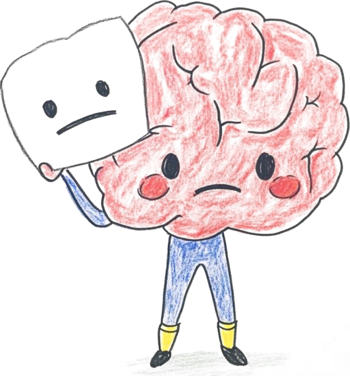
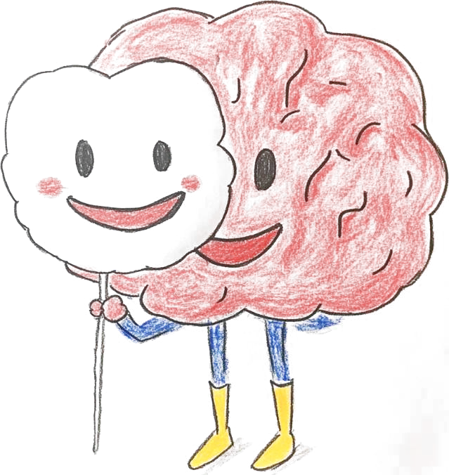

THEMA VAN DE MAAND
Achter je masker
Wie ben jij echt? Soms zet je een masker op. Dan lach je, terwijl je vanbinnen iets anders voelt. Deze maand kijken we samen achter het masker.

Je mag laten zien hoe je je echt voelt.
Weetje Watje
Weet je wat?
Hier komt het verhaaltje van Nicky.
Liedje
Ik hoef niet altijd blij te zijn.
Druk zelf op de startknop. Je mag zo vaak luisteren als je wilt.
Oefening
Maskers op, maskers af.
- Ga samen voor de spiegel staan. Of kijk elkaar aan.
- Zet je blije masker op: lach zo breed als je kunt!
- Nu je boze masker. Frons maar flink.
- Schud je gezicht los: brrr!
- En nu… je echte gezicht. Hoe kijkt dat vandaag?
- Zeg maar hardop: zo voel ik mij. En dat mag.
Hoorspel
Het masker van Max.

Het masker van Max
Max heeft een masker dat altijd lacht. Maar wat gebeurt er als het masker een dagje kwijt is?
We zijn het nog aan het maken. Kom gauw nog eens luisteren!